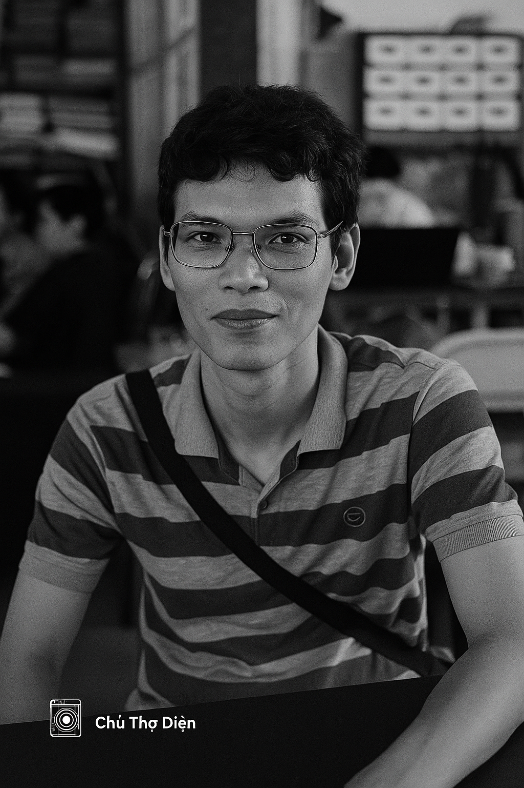

🌊 Tôi là ai?
Tôi là một kỹ sư điện ngoài khơi – người sửa sóng để kết nối, người bắt ánh sáng để kể chuyện. Giữa đại dương không Wi-Fi, tôi vẫn sync được cảm xúc. Từ passkey bảo mật đến khẩu độ máy ảnh, tôi sống giữa công nghệ và thơ ca.
⚙️ Tôi đã làm gì?
- Quản lý hệ thống Internet vệ tinh Starlink + VSAT cho đội tàu PVT Logistics
- Xây dựng nền tảng SMMS và CanoPus cho kỹ thuật hàng hải
- Bảo mật tài khoản bằng Passkey, YubiKey, 2FA – chuẩn Zero Trust cá nhân
- Chụp ảnh kỹ thuật – hành trình – đời sống trên biển với góc nhìn cá nhân
- Triển khai thương hiệu “Diễn viên hiện trên biển” bằng code và cảm xúc
📡 Định hướng
Tôi không chỉ xử lý tín hiệu VSAT và mô-đun mạng – tôi còn tìm kiếm tín hiệu từ con người. Với ống kính máy ảnh và passkey trong tay, tôi kể lại câu chuyện của những người sống giữa sóng. Trong tương lai, tôi mong muốn giúp thuyền viên kết nối dễ dàng hơn bằng các giải pháp mới như OneWeb – nhanh hơn, rẻ hơn VSAT, và thân thiện với trải nghiệm người dùng. Đó không chỉ là tối ưu kỹ thuật – đó là cách tôi đóng góp để cuộc sống trên biển bớt cô lập và bền vững hơn.
📝 Bài thơ cá nhân
Kỹ sư điện ngoài khơi.
Có passkey, có lens, không có sóng.
Vừa unlock server, vừa bắt ánh sáng. Passkey đâu 🪪 tôi đó.
Giữa đại dương không Wi-Fi, tôi vẫn sync được cảm xúc.
Cầm passkey mở bảo mật, cầm máy ảnh mở lòng người.
Debug mạng xong, tôi đi chụp ánh sáng. Gọi đó là cân bằng.
Ảnh không nét thì tôi lấy nét. Sóng không mạnh thì tôi reset router.
Dưới ánh trăng và tín hiệu OneWeb, tôi chỉnh tay cả khẩu độ lẫn subnet.